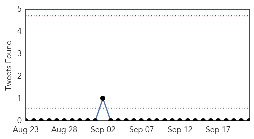
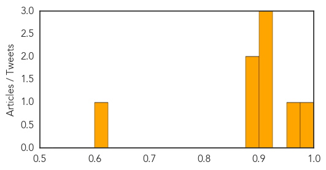

Dengue Fever
30-Day Web Trend
3 alerts, 13 warnings
30-Day Twitter Trend
0 alerts, 0 warnings

Article Locations
Article Confidences
Top Articles:
- 0.990
- Number of dengue fever cases on the rise
- 0.956
- Private hospitals also being trained to treat dengue
- 0.922
- Dengue haunts government
- 0.922
- Maduro says foreign media behind fears of epidemic
- 0.907
- Health Ministry spends nearly RM20m for dengue advocacy programmes
- 0.898
- Seasonal diseases on the rise
- 0.897
- Health Ministry spends nearly RM20m for dengue programmes
- 0.608
- Demand for platelets shoots up as dengue cases surge
Top Tweets:
- 0.554
- Flavivirus news: Number of dengue fever cases on the rise - The News International: Number of d... http://t.co/NfVPODVeV1 pathogenposse
Hepatitis
30-Day Web Trend
0 alerts, 0 warnings
30-Day Twitter Trend
0 alerts, 0 warnings
Article Locations

Article Confidences

Top Articles:
-
No articles found for Sep 21, 2014
Top Tweets:
-
No tweets found for Sep 21, 2014